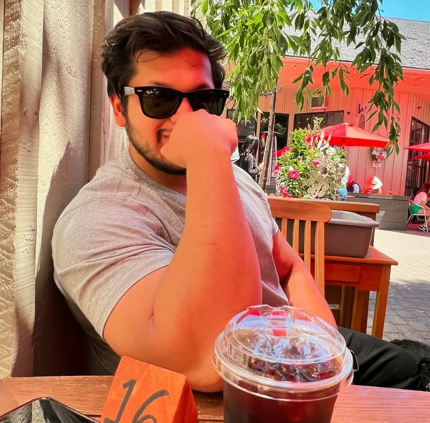
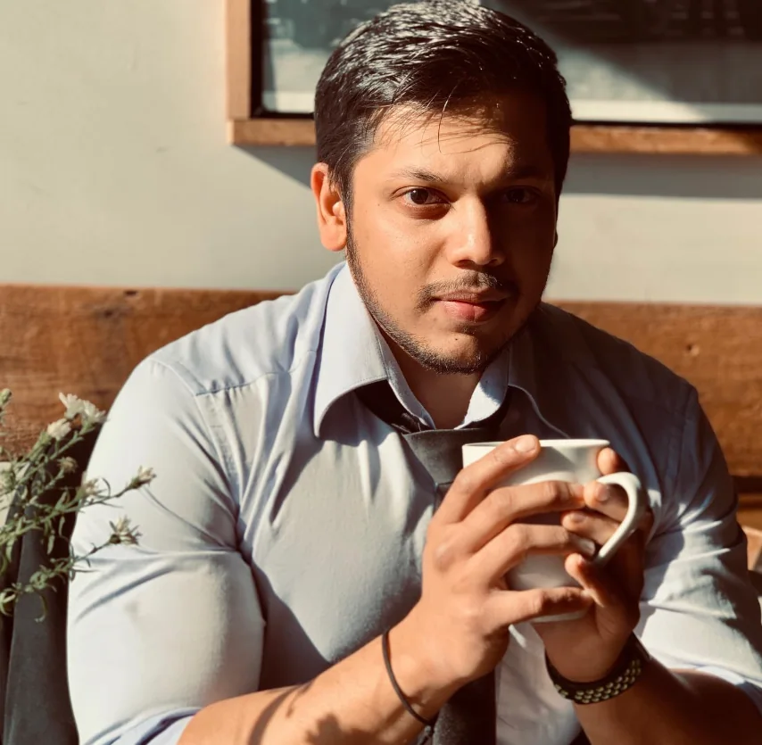
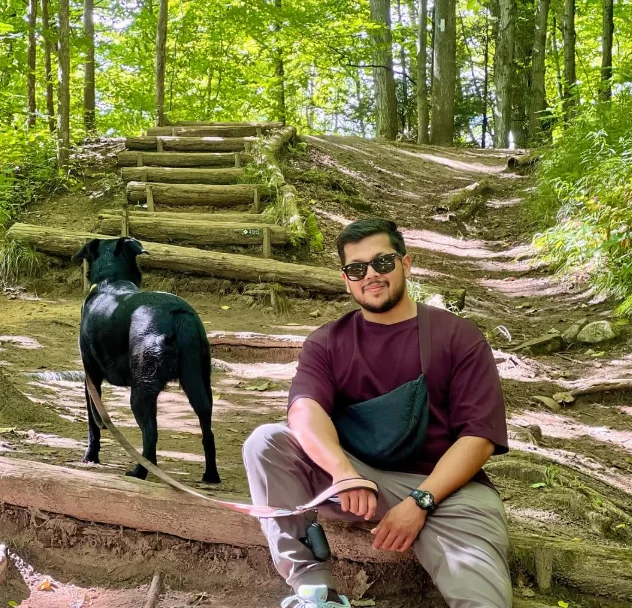
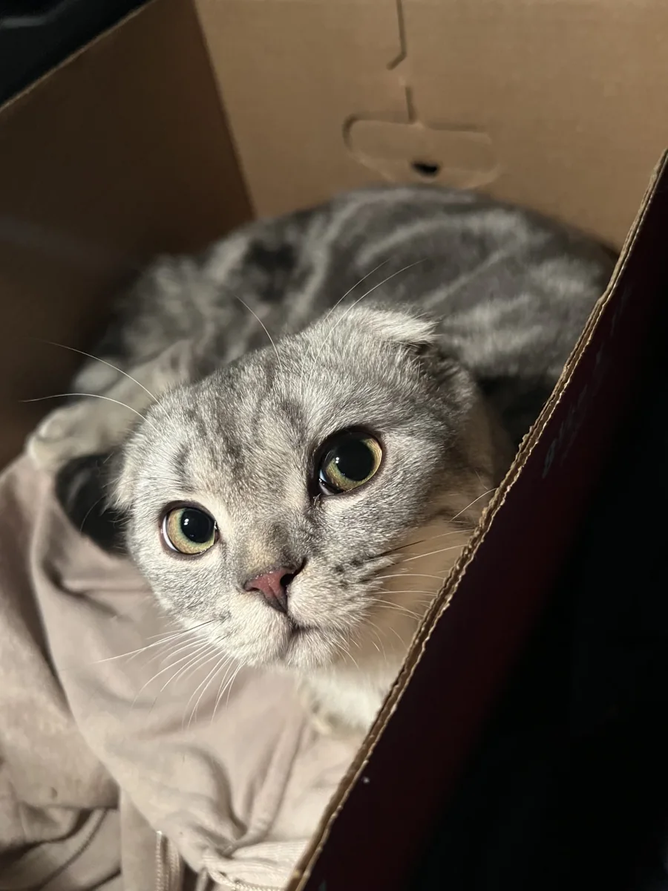
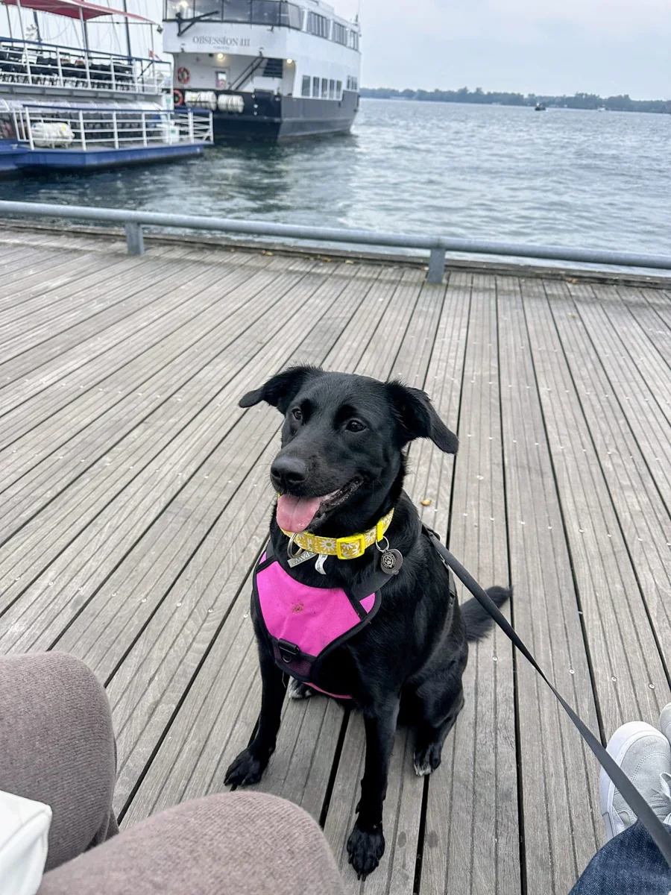
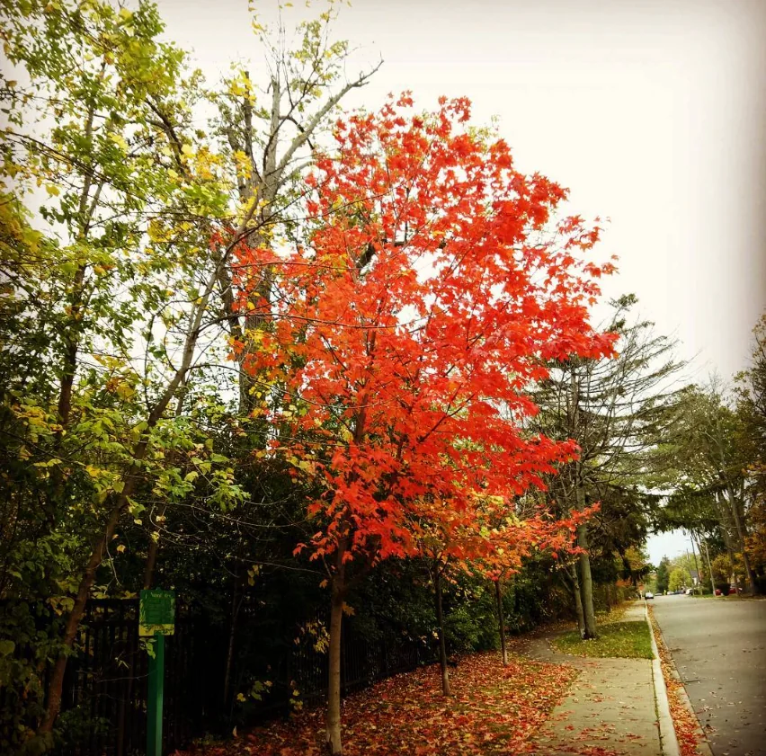

Vanshul
Rathore
I bring together business operations, procurement, supply chain, and technology to solve complex challenges, improve processes, and help organizations operate more effectively.
Explore my background ↓
Technology roots.
Business leadership.
I have more than a decade of professional experience spanning enterprise technology and commercial business operations. At Omni Food Equipment, I progressed from an IT and communications role into management and ultimately Head of Business Operations.
My work has included international procurement, supplier relationships, inventory planning, logistics, pricing, e-commerce, and cross-functional operational coordination. Earlier in my career, I worked in enterprise technology supporting Oracle-based applications.
I value thoughtful analysis, practical execution, continuous improvement, and strong working relationships. I'm based in the Greater Toronto Area, Canada.
Where strategy meets execution.
Business Operations
Coordinating procurement, sales, logistics, finance, and marketing to support reliable day-to-day execution and long-term operational improvements.
International Procurement & Supplier Management
Planning overseas purchasing, negotiating with suppliers, and managing production timelines, pricing, and commercial terms.
Inventory Planning & Supply Chain
Forecasting demand, balancing stock availability with purchasing decisions, and coordinating container logistics and landed costs.
E-Commerce & Digital Commerce
Managing Shopify product operations, pricing, promotions, and digital customer experience alongside marketing and growth initiatives.
Process Improvement
Finding operational bottlenecks, improving workflows, and using technology and reporting to make teams more effective.
Commercial Strategy & Pricing
Supporting pricing decisions, planning, and operational forecasting with a focus on sustainable business performance.
Experience at scale.
A few examples of the operational scope and hands-on work behind my experience.
Inbound containers planned
Personally planned and placed overseas equipment orders for approximately 60 containers received in 2023, balancing inventory requirements and container utilization.
Product catalogue
Worked across e-commerce operations supporting a catalogue of more than 4,000 SKUs, including product data, pricing, and digital merchandising.
Supplier-to-warehouse coordination
Managed purchasing workflows from stock assessment and supplier negotiations through production follow-up, shipping-agent coordination, and warehouse delivery.
A career at the intersection of technology and business.
Head of Business Operations
Leading cross-functional operations across procurement, supply chain, inventory planning, pricing, e-commerce, and team coordination, with a focus on operational performance and commercial decision-making.
IT/Communications Manager
Expanded from digital operations into purchasing and inventory leadership, planning international supplier orders, coordinating container shipments, and supporting pricing and commercial decisions.
IT/Communication Coordinator
Built a foundation in digital commerce and business systems through Shopify product management, pricing updates, digital marketing, communications, and internal technology support.
Sales & Marketing Representative
Worked across customer engagement, marketing processes, and CRM improvements.
Senior Analyst
Supported enterprise technology and Oracle-based applications for international clients.
The things that
keep me grounded.
Outside of work, I enjoy good coffee, exploring new places, spending time outdoors, and capturing everyday moments. These are a few snapshots of what I love.







Expectations Meet Reality.
I've always believed that life rarely unfolds exactly as planned. Expectations Meet Reality is where I share my thoughts on personal growth, experiences, and the lessons learned along the way.
Let's connect.
Based in the Greater Toronto Area, Canada.